dat_full_long <- dat_full |>
pivot_longer(cols = c(pre1, pre4),
names_to = "time_rating",
values_to = "rating")R u Ready? FS2026 | Psychologie der Digitalisierung - Einheit 10
R u Ready? Reproduzierbare Datenaufbereitung und -analyse mit R
FS 2026
LV-Leitung: Dr. Sandra Grinschgl / MSc. Laura Hirt
Tutor: BSc. Lars Schilling
10. Einheit, 29.04.2026
Heute:
Inhalte heute
Besprechung der Muddiest Points II
Check-in: Hands-on Block 5
Datenvisualisierung: Tabellen & Abbildungen
Check-in: Hands-on Block 5
Haben alle einen Long Datensatz (e.g. dat_full_long) mit 318 Zeilen = 2 Zeilen pro Versuchsperson?
Wenn nicht:
❗Falls ihr bis Ende Lektion noch nicht den LONG Datensatz erstellt und gespeichert habt - meldet euch bei uns
Datenvisualisierung: Tabellen
Es gibt die Möglichkeit, APA-konforme Tabellen direkt in R zu erstellen
Schritt 1: Deskriptive Tabelle erstellen mit summarize
Ziel: Deskriptive Kennwerte (Mean, Min und Max der Körpermasse) pro Gruppe berechnen
penguins_full <- drop_na(penguins)
penguins_summary <- penguins_full |>
group_by(species) |>
summarize(mean_body_mass = mean(body_mass_g),
min_body_mass = min(body_mass_g),
max_body_mass = max(body_mass_g)
)
penguins_summary# A tibble: 3 × 4
species mean_body_mass min_body_mass max_body_mass
<fct> <dbl> <int> <int>
1 Adelie 3706. 2850 4775
2 Chinstrap 3733. 2700 4800
3 Gentoo 5092. 3950 6300Datenvisualisierung: Tabellen
Schritt 2: kable auf deskriptive Tabelle anwenden
Ziel: Deskriptive Tabelle formatieren und beschriften
library(knitr)
penguins_summary |>
kable(
caption = "Summary of penguin body mass by species",
digits = 1,
col.names = c("Species", "Mean body mass (g)", "Min", "Max")
)| Species | Mean body mass (g) | Min | Max |
|---|---|---|---|
| Adelie | 3706.2 | 2850 | 4775 |
| Chinstrap | 3733.1 | 2700 | 4800 |
| Gentoo | 5092.4 | 3950 | 6300 |
Weitere Formatierungsmöglichkeiten in der Hilfefunktion ersichtlich!
apaTables: APA-Tabellen für statistische Analysen
Warum apaTables? Für inferenzstatistische Ergebnisse (z.B. Korrelationen) benötigen wir APA-konforme Tabellen.
→ Auch anwendbar auf Regressionen und ANOVAs
Schritt 1: Relevante Variablen für die Korrelation auswählen
Beispiel: drei metrische Variablen für eine Korrelationsanalyse auswählen
penguins_subset <- penguins |>
select(bill_length_mm, bill_depth_mm, flipper_length_mm)apaTables: APA-Tabellen für statistische Analysen
Schritt 2: Korrelationstabelle für ausgewählte Variablen erstellen und speichern
Berechnet Korrelationen, Mittelwerte und Standardabweichungen und formatiert diese im APA-Stil
library(apaTables)
apa.cor.table(penguins_subset, filename = "cor_table.docx")
Means, standard deviations, and correlations with confidence intervals
Variable M SD 1 2
1. bill_length_mm 43.92 5.46
2. bill_depth_mm 17.15 1.97 -.24**
[-.33, -.13]
3. flipper_length_mm 200.92 14.06 .66** -.58**
[.59, .71] [-.65, -.51]
Note. M and SD are used to represent mean and standard deviation, respectively.
Values in square brackets indicate the 95% confidence interval.
The confidence interval is a plausible range of population correlations
that could have caused the sample correlation (Cumming, 2014).
* indicates p < .05. ** indicates p < .01.
Datenvisualisierung: Abbildungen (Fortsetzung in EH 11)
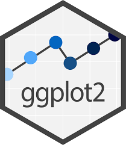
ggplot2 ist das zentrale Paket für Datenvisualisierung in R
Ermöglicht die Erstellung von z.B. Scatterplots, Balkendiagrammen und Liniengrafiken
Visualisierungen: Reproduktion der Abbildungen aus Grinschgl et al. (2021)
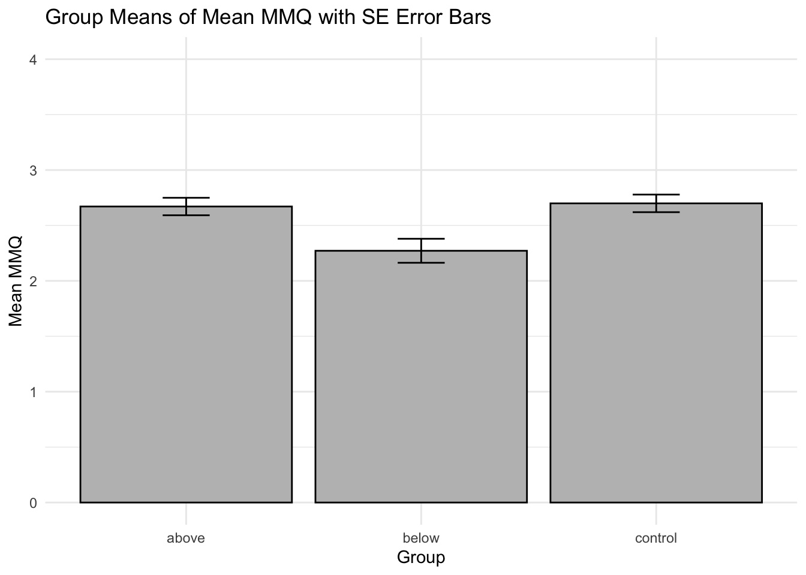
→ Solche publizierten Grafiken können wir mit ggplot2 selbst erstellen!
Visualisierungen: Reproduktion der Abbildungen aus Grinschgl et al. (2021)
`summarise()` has regrouped the output.
ℹ Summaries were computed grouped by group_all and time_rating.
ℹ Output is grouped by group_all.
ℹ Use `summarise(.groups = "drop_last")` to silence this message.
ℹ Use `summarise(.by = c(group_all, time_rating))` for per-operation grouping
(`?dplyr::dplyr_by`) instead.Warning: Using `size` aesthetic for lines was deprecated in ggplot2 3.4.0.
ℹ Please use `linewidth` instead.Ignoring unknown labels:
• shape : "Feedback Group"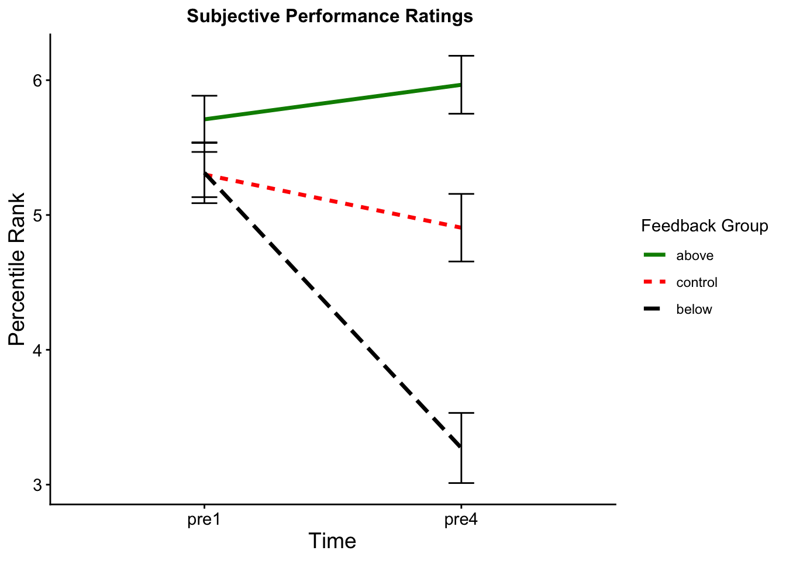
→ Auch komplexe Grafiken können wir mit ggplot2 schrittweise reproduzieren
ggplot2(): Eine Grammatik für Grafiken
Plots werden schrittweise aufgebaut
Jede Grafik besteht aus:
Daten
Aesthetic Mappings → Was wird dargestellt?
Layers → Wie wird es dargestellt?
ggplot2() - Cheatsheet Statistik
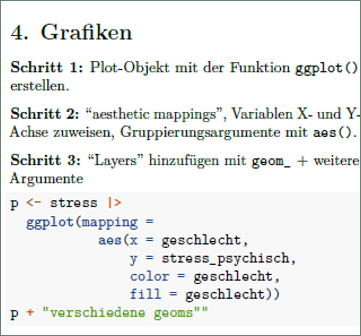
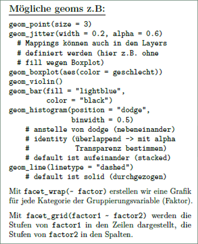
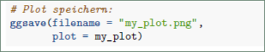
With ggplot2, you begin a plot with the function ggplot(), defining a plot object that you then add layers to. The first argument of ggplot() is the dataset to use in the graph and so ggplot(data = penguins) creates an empty graph that is primed to display the penguins data, but since we haven’t told it how to visualize it yet, for now it’s empty. This is not a very exciting plot, but you can think of it like an empty canvas you’ll paint the remaining layers of your plot onto.
Next, we need to tell ggplot() how the information from our data will be visually represented. The mapping argument of the ggplot() function defines how variables in your dataset are mapped to visual properties (aesthetics) of your plot. The mapping argument is always defined in the aes() function, and the x and y arguments of aes() specify which variables to map to the x and y axes. For now, we will only map flipper length to the x aesthetic and body mass to the y aesthetic. ggplot2 looks for the mapped variables in the data argument, in this case, penguins.
To do so, we need to define a geom: the geometrical object that a plot uses to represent data. These geometric objects are made available in ggplot2 with functions that start with geom_. People often describe plots by the type of geom that the plot uses. For example, bar charts use bar geoms (geom_bar()), line charts use line geoms (geom_line()), boxplots use boxplot geoms (geom_boxplot()), scatterplots use point geoms (geom_point()), and so on.
Zusammenhang bedeutet die Verwendung von +, dass wir einzelne Elemente eines Plot-Objektes zusammenfügen.
Argumente von ggplot()
Schritt 1: ggplot() + Daten
Wir starten immer mit einem Datensatz
Es passiert noch nichts sichtbares!
library(ggplot2)
ggplot(data = penguins)
With ggplot2, you begin a plot with the function ggplot(), defining a plot object that you then add layers to. The first argument of ggplot() is the dataset to use in the graph and so ggplot(data = penguins) creates an empty graph that is primed to display the penguins data, but since we haven’t told it how to visualize it yet, for now it’s empty. This is not a very exciting plot, but you can think of it like an empty canvas you’ll paint the remaining layers of your plot onto.
Argumente von ggplot()
Schritt 2: aes() - Was wird geplottet?
aes()= Aesthetic mappingsVariablen werden den Achsen zugewiesen
ggplot(penguins,
aes(x = body_mass_g, y = bill_length_mm))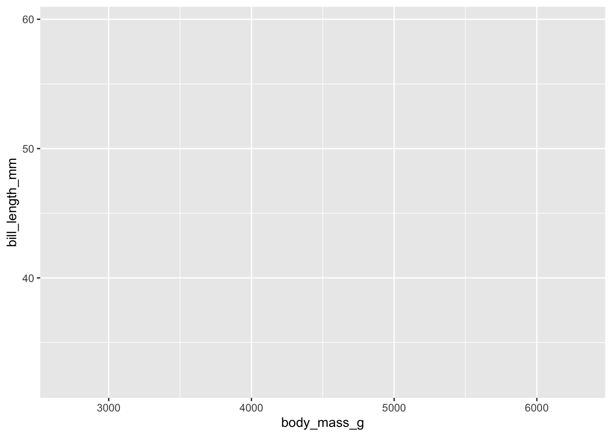
Next, we need to tell ggplot() how the information from our data will be visually represented. The mapping argument of the ggplot() function defines how variables in your dataset are mapped to visual properties (aesthetics) of your plot. The mapping argument is always defined in the aes() function, and the x and y arguments of aes() specify which variables to map to the x and y axes. For now, we will only map flipper length to the x aesthetic and body mass to the y aesthetic. ggplot2 looks for the mapped variables in the data argument, in this case, penguins.
Argumente von ggplot()
Schritt 3: geoms() - Wie wird es dargestellt?
geom_*()bestimmt die Darstellungsformz.B.: Punkte, Linien, Balken
ggplot(penguins,aes(x = body_mass_g, y = bill_length_mm)) +
geom_point()Warning: Removed 2 rows containing missing values or values outside the scale range
(`geom_point()`).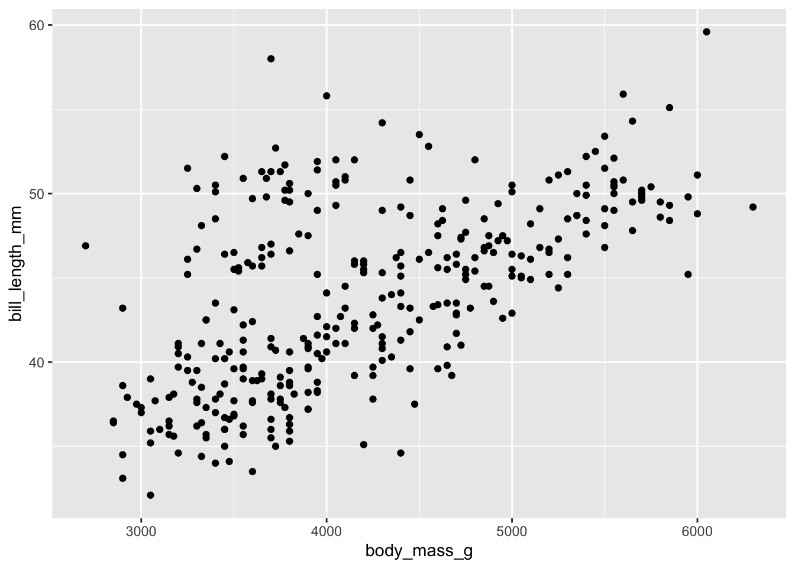
To do so, we need to define a geom: the geometrical object that a plot uses to represent data. These geometric objects are made available in ggplot2 with functions that start with geom_. People often describe plots by the type of geom that the plot uses. For example, bar charts use bar geoms (geom_bar()), line charts use line geoms (geom_line()), boxplots use boxplot geoms (geom_boxplot()), scatterplots use point geoms (geom_point()), and so on.
Argumente von ggplot()
Das wichtigste Prinzip: + fügt Layer hinzu
Jede neue Zeile = ein neuer Layer
Die Grafik wird schrittweise erweitert
ggplot(penguins,aes(x = body_mass_g, y = bill_length_mm)) +
geom_point() +
geom_smooth()`geom_smooth()` using method = 'loess' and formula = 'y ~ x'Warning: Removed 2 rows containing non-finite outside the scale range
(`stat_smooth()`).Warning: Removed 2 rows containing missing values or values outside the scale range
(`geom_point()`).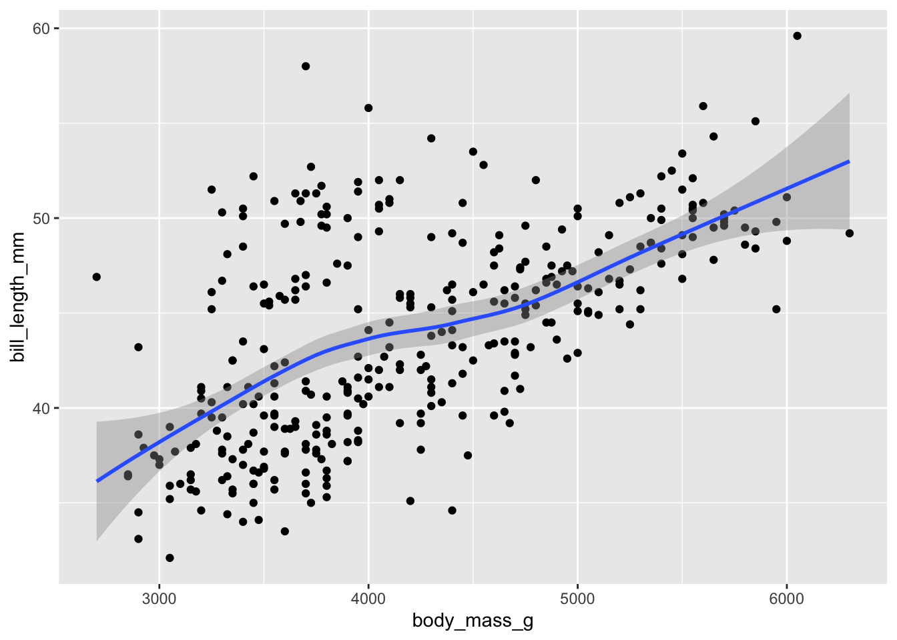
Argumente von ggplot()
aes(): global vs. im Layer
Mapping kann:
für alles gelten (global)
nur für einzelne Layer gelten
# global
ggplot(penguins, aes(x = body_mass_g, y = bill_length_mm)) +
geom_point()Warning: Removed 2 rows containing missing values or values outside the scale range
(`geom_point()`).
Argumente von ggplot()
aes(): global vs. im Layer
Mapping kann:
für alles gelten (global)
nur für einzelne Layer gelten
# im Layer
ggplot(penguins) +
geom_point(aes(x = body_mass_g, y = bill_length_mm))Warning: Removed 2 rows containing missing values or values outside the scale range
(`geom_point()`).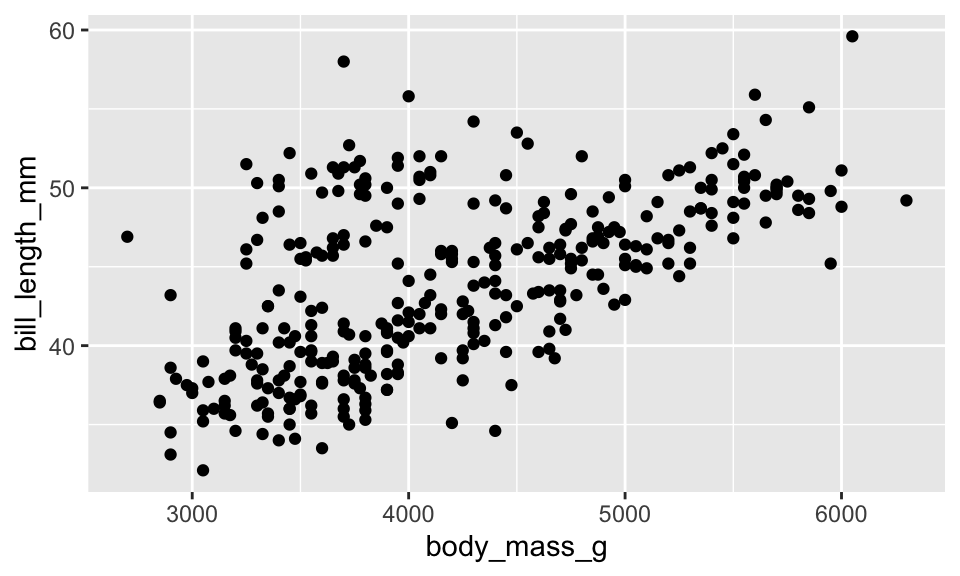
Argumente von ggplot()
Welche geom für welche Daten?
Je nach Art der Daten und der gewünschten Darstellungsart auszuwählen:
1 kategoriale Variable:
geom_bar()1 kontinuierliche Variable:
geom_histogram()2 kategoriale Variablen:
geom_count()2 metrische Variablen:
geom_point(),geom_line()1 kategoriale + 1 metrische Variable:
geom_boxplot(),geom_violin()
Argumente von ggplot()
Weitere Layer: Labels, Design, Modelle
Der Plot wird Schritt für Schritt erweitert
Inhalt vs. Darstellung trennen
+ labs(
title = "Relationship Between Body Mass and Bill Length",
x = "Body Mass (g)",
y = "Bill Length (mm)")
+ theme_classic()
+ geom_smooth(method = "lm")→ Mit theme_ können verschiedene Formatierungen gewählt werden. theme_classic wird typischerweise für APA7 passende Formatierungen gewählt.
Argumente von ggplot()
Ein vollständiger ggplot
ggplot(penguins,aes(x = body_mass_g, y = bill_length_mm)) +
geom_point() +
geom_smooth(method = "lm") +
theme_classic() +
labs(
title = "Relationship Between Body Mass and Bill Length",
x = "Body Mass (g)",
y = "Bill Length (mm)"
)`geom_smooth()` using formula = 'y ~ x'Warning: Removed 2 rows containing non-finite outside the scale range
(`stat_smooth()`).Warning: Removed 2 rows containing missing values or values outside the scale range
(`geom_point()`).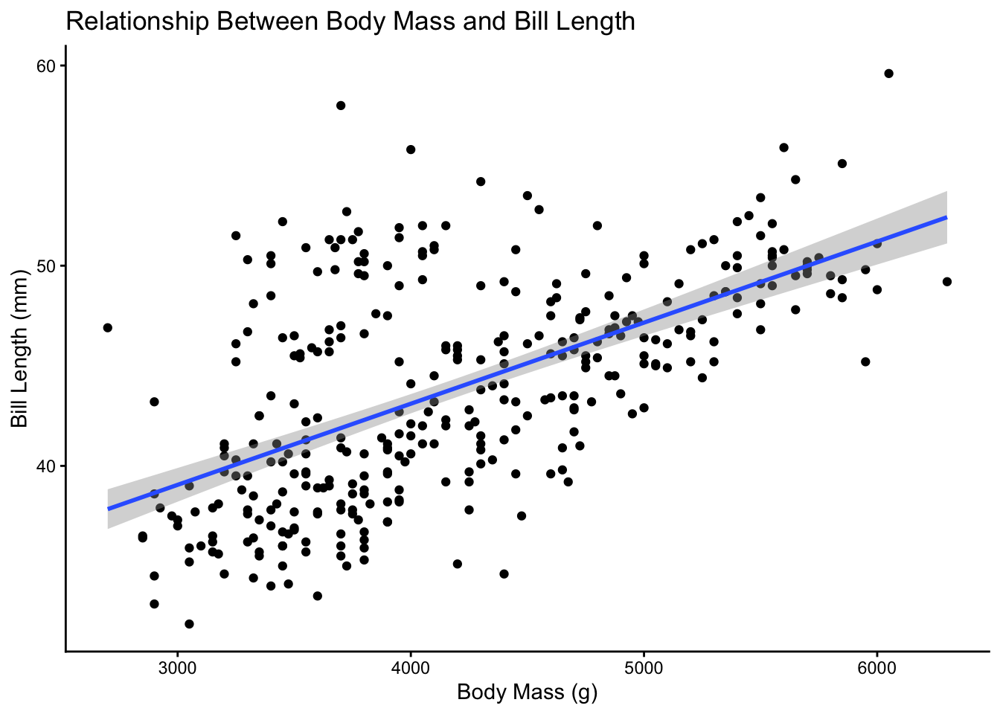
Argumente von ggplot()
Komplexere Kombinationen
- Kombination von verschiedenen Layers/Geoms
penguins_plot <- ggplot(penguins, aes(x = island, y = body_mass_g, color = island, shape = sex)) +
geom_boxplot() +
geom_jitter(alpha = 0.5) +
theme_classic() +
labs(title = "Body Mass Per Island and Species", x = "Island", y = "Body Mass (g)")
penguins_plotWarning: Removed 2 rows containing non-finite outside the scale range
(`stat_boxplot()`).Warning: Removed 11 rows containing missing values or values outside the scale range
(`geom_point()`).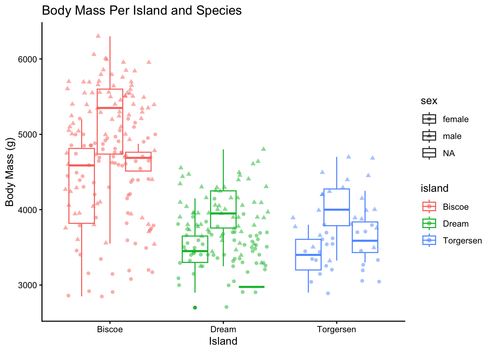
Abbildungen speichern
ggsave(filename = "my_first_plot.png", plot = penguins_plot)Weitere Ressourcen zu ggplot2:
Zum Nachschlagen
ggplot2 Cheatsheet
Überblick über häufige Funktionen, Geoms und EinstellungenAuflistung von Argumenten
Hilfreich, wenn ihr wissen wollt, welche Optionen eine Funktion hat
Zum Vertiefen
R for Data Science – Kapitel „Exploratory data analysis“
Einführung in die Grundlogik von ggplot2R for Data Science – Kapitel „Layers“
Vertiefung zu Layern, Geoms, Mappings und Themes
Für Inspiration
- Top 50 ggplot2 Visualizations
Beispiele für unterschiedliche Plot-Typen
Heute haben wir:
Muddiest Points besprochen
Basics der Datenvisualisierungen kennengelernt
Erstellung von Tabellen
ggplot()
Reminder: Beim Abschlussprojekt müsst ihr 1 Tabelle oder Abbildung nach Wahl zu den simulierten Daten abgeben. –> Details folgen!
R-Hausübung 2
Abgabe bis Freitag 08.05.2026, 23:55
Peerfeedback bis Mittwoch 13.05.2026 (vor der Einheit)
Achtung: Einhalten der Namensvorgaben!
Namenseinhaltung für Abgabe der Files (da wir diese via R-Funktion öffnen)
16:15 Gruppe –> Nächste Woche kommt Laura!